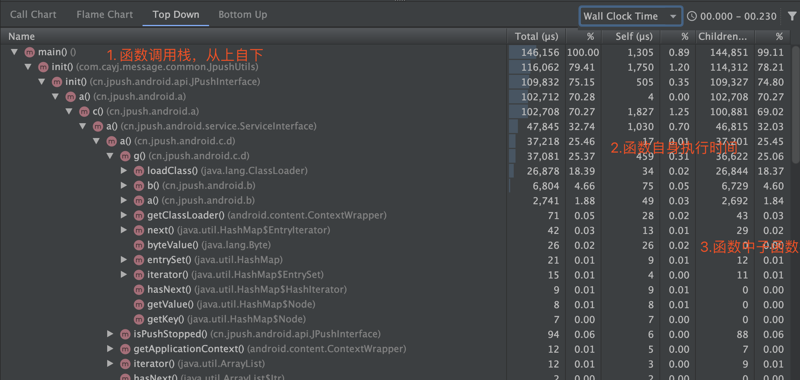
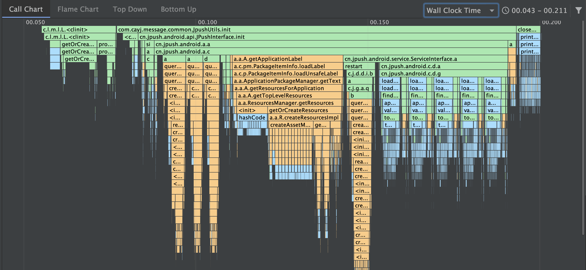
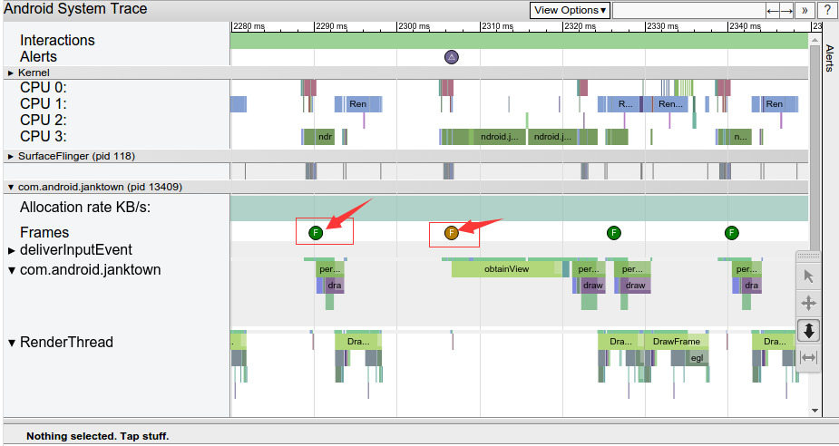

【三】启动优化工具
traceview
介绍
- 图形的形式展示执行时间、调用栈等；
- 信息全面，包含所有线程；
- 功能过于强大，运行时开销严重，整体会变慢；(它会抓取所有线程的所有执行函数)可能会带編优化方向；
使用方式
开始执行
//传入保存的文件名，该方法有多个重载形式 Debug.startMethodTracing("xxx")结束执行
Debug.stopMethodTracing()文件位置
生成文件在sd卡：sdcard/Android/data/packagename/files
图解
整体图

函数调用Top-Down

- Top Down表示函数调用栈；
- Total表示该函数执行的总时间；
- Self表示该函数自身代码执行时间；
- Children表示该函数中的子函数执行时间；
Wall Clock Time和Thread Time

- Wall Clock Time表示该线程真正执行的时间；
- Thread Time表示Cpu真正执行时间；
Call Chart

- 函数调用栈及对应的时间消耗；
- 橙色表示系统Api调用；
- 绿色表示自身函数调用；
- 蓝色表示Java函数调用；
systrace
介绍
- 结合Android内核的数据，生成Html报告；
- API 18以上使用，推荐TraceCompat；
- 轻量级，开销小；
- 直观反映cpu利用率；
- cpuTime和wallTime区别；(优化方向为cpuTime)
- wallTime是代码执行时间；
- cpuTime是代码消耗cpu的时间(重点指标)
使用方式
python systrace.py [options] [category1] [category2] ... [categoryN]
- options可取值：
| options | 解释 |
|---|---|
| -o |
指定trace数据文件的输出路径，如果不指定就是当前目录的trace.html |
| -t N, –time=N | 执行时间，默认5s。绝对不要把时间设的太短导致你操作没完Trace就跑完了，这样会出现Did not finish 的标签，分析数据就基本无效了 |
| -b N, –buf-size=N | buffer大小（单位kB),用于限制trace总大小，默认无上限 |
| -k |
追踪kernel函数，用逗号分隔 |
| -a |
这个选项可以开启指定包名App中自定义Trace Label的Trace功能。也就是说，如果你在代码中使用了Trace.beginSection("tag"), Trace.endSection；默认情况下，你的这些代码是不会生效的，因此，这个选项一定要开启 |
| –from-file= |
从文件中创建互动的systrace |
| -e |
指定设备，在特定连接设备上进行跟踪，由设备序列号标识 。 |
| -l, –list-categories | 这个用来列出你分析的那个手机系统支持的Trace模块，一般来说，高版本的支持的模块更多 |
- category可取值：
| category | 解释 |
|---|---|
| gfx | Graphic系统的相关信息，包括SerfaceFlinger，VSYNC消息，Texture，RenderThread等；分析卡顿非常依赖这个。 |
| input | Input |
| view | View绘制系统的相关信息，比如onMeasure，onLayout等。。 |
| webview | WebView |
| wm | Window Manager |
| am | ActivityManager调用的相关信息；用来分析Activity的启动过程比较有效。 |
| sm | Sync Manager |
| audio | Audio |
| video | Video |
| camera | Camera |
| hal | Hardware Modules |
| app | Application |
| res | Resource Loading |
| dalvik | 虚拟机相关信息，比如GC停顿等。 |
| rs | RenderScript |
| bionic | Bionic C Library |
| power | Power Management |
| sched | CPU调度的信息，非常重要；你能看到CPU在每个时间段在运行什么线程；线程调度情况，比如锁信息。 |
| binder_driver | Binder驱动的相关信息，如果你怀疑是Binder IPC的问题，不妨打开这个。 |
| core_services | SystemServer中系统核心Service的相关信息，分析特定问题用。 |
| irq | IRQ Events |
| freq | CPU Frequency |
| idle | CPU Idle |
| disk | Disk I/O |
| mmc | eMMC commands |
| load | CPU Load |
| sync | Synchronization |
| workq | Kernel Workqueues |
| memreclaim | Kernel Memory Reclaim |
| regulators | Voltage and Current Regulators |
常用方式
python systrace.py -t 10 -a com.xxx.packagename -o xxx.html sched gfx view wm am app
图解

该报告列出了呈现UI帧并指示沿时间线的每个渲染帧的每个进程。用绿色框架圆圈表示在16.6毫秒内渲染以保持每秒60帧稳定所需的帧。渲染时间超过16.6毫秒的帧用黄色或红色框架圆圈表示。